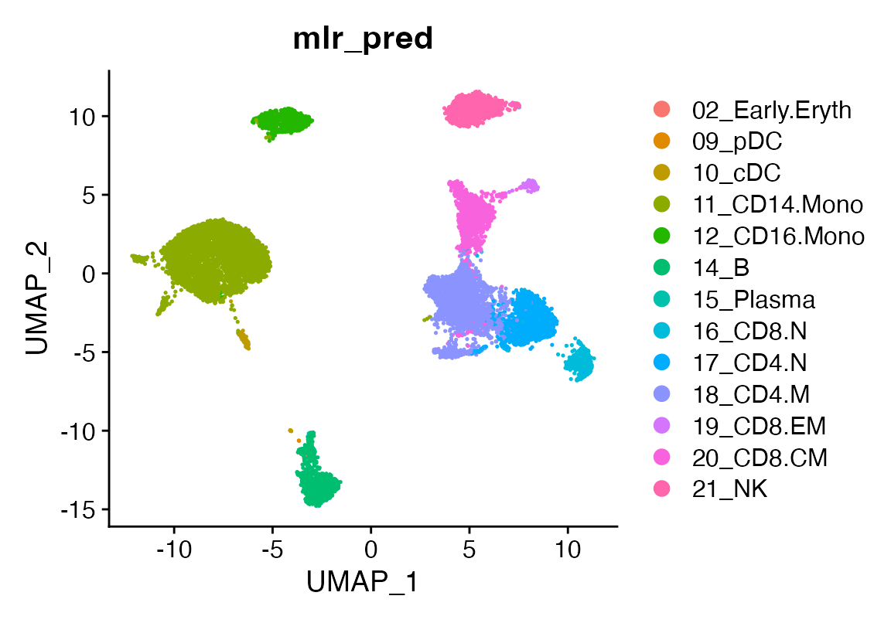

A deeper look at viewmastR
2024-08-08
InDepth.RmdA Deeper Look at viewmastR
Before diving into how viewmastR works, let’s first set
up the necessary environment and go through essential functions to
streamline your training and analysis workflow.
1. Installing Rust
Before using viewmastR, you’ll need an updated
installation of Rust, as it’s a core dependency. Follow
the instructions on the official Rust installation
page to set up Rust on your system.
2. Installing viewmastR
Once Rust is installed, you can install viewmastR
directly from GitHub. Ensure you have the devtools package
installed, and then use the following command:
devtools::install_github("furlan-lab/viewmastR")3. Viewing the Training History
viewmastR tracks key data during the training process,
which can be accessed by setting the return_type parameter
to "list". This returns: 1. The query object with predicted
cell types. 2. The training results.
Here’s how you can retrieve and visualize the training data:
suppressPackageStartupMessages({
library(viewmastR)
library(Seurat)
library(ggplot2)
library(scCustomize)
library(plotly)
})
# Load query and reference datasets
seu <- readRDS(file.path(ROOT_DIR1, "240813_final_object.RDS"))
vg <- get_selected_genes(seu)
seur <- readRDS(file.path(ROOT_DIR2, "230329_rnaAugmented_seurat.RDS"))
# View training history
output_list <- viewmastR(seu, seur, ref_celldata_col = "SFClassification", selected_genes = vg, return_type = "list")Visualizing Training Data
To plot training vs validation loss, you can use the following:
plot_training_data(output_list)For rendering the plot without details:
plt <- plot_training_data(output_list)
pltTip: If the training loss decreases while the validation loss plateaus, it may indicate overfitting.
4. Tuning for Speed
viewmastR runs with 3 available backends (see Burn
for more details). The candle backend tends to run faster
on Apple M1/M2 processors. Here’s how you can compare the performance of
different backends on your system:
run1 <- viewmastR(seu, seur, ref_celldata_col = "SFClassification", selected_genes = vg, max_epochs = 3, backend = "candle", return_type = "list")
run2 <- viewmastR(seu, seur, ref_celldata_col = "SFClassification", selected_genes = vg, max_epochs = 3, backend = "wgpu", return_type = "list")
run3 <- viewmastR(seu, seur, ref_celldata_col = "SFClassification", selected_genes = vg, max_epochs = 3, backend = "nd", return_type = "list")
# Compare training times
gp<-ggplot(data.frame(training_times = c(run1$training_output$duration$training_duration,
run2$training_output$duration$training_duration,
run3$training_output$duration$training_duration),
backend = c("candle", "wgpu", "nd")),
aes(x = backend, y = training_times, fill = backend)) +
geom_col() +
theme_bw() +
labs(x = "Backend", y = "Training Time (s)") +
NoLegend() + ggtitle(paste("Arch: ", as.character(Sys.info()["machine"])))
ggplotly(gp)
# To automatically set backend
if (as.character(Sys.info()["machine"])=="x86_64"){
backend <- "wgpu"
} else {
backend <- "candle"
}5. Saving Training Subsets
To inspect the training and test data used by viewmastR
we provide the setup_training function if you so desire to evaluate
these using other learning frameworks.
ti <- setup_training(seu, seur, ref_celldata_col = "SFClassification", selected_genes = vg, return_type = "matrix", backend = backend)
# Convert labels to max class and save them
train_label <- apply(ti$Ytrain_label, 1, which.max)
test_label <- apply(ti$Ytest_label, 1, which.max)
# Save training data and labels
writeMMgz(as(ti$Xtrain_data, "dgCMatrix"), "/path/to/train.mm.gz")
writeMMgz(as(ti$Xtest_data, "dgCMatrix"), "/path/to/test.mm.gz")
writeMMgz(as(ti$query, "dgCMatrix"), "/path/to/query.mm.gz")
data.table::fwrite(data.frame(train = train_label), "/path/to/train_labels.tsv.gz", compress = "gzip")
data.table::fwrite(data.frame(test = test_label), "/path/to/test_labels.tsv.gz", compress = "gzip")6. Analyzing Probabilities
Run inference and obtain prediction probabilities:
ti <- setup_training(seu, seur, ref_celldata_col = "SFClassification", selected_genes = vg, return_type = "matrix")
seu <- viewmastR(seu, seur, ref_celldata_col = "SFClassification", selected_genes = vg, max_epochs = 3, backend = backend)
# Obtain prediction probabilities
seu <- viewmastR_infer(seu, "/tmp/sc_local/model.mpk", vg, labels = levels(factor(seur$SFClassification)), return_probs = TRUE)
scCustomize::FeaturePlot_scCustom(seu, features = "prob_19_CD8.EM")
7. Evaluating Model Weights
To inspect model weights (note this only works for mlr - see below):
mod <- RcppMsgPack::msgpack_read("/tmp/sc_local/model.mpk", simplify = TRUE)
weights <- mod$item$linear1$weight$param$value
shape <- mod$item$linear1$weight$param$shape
wmat <- data.frame(t(matrix(weights, nrow = shape[2])))
rownames(wmat) <- ti$features
colnames(wmat) <- ti$label_text
top_NK_genes <- rownames(wmat)[sort(wmat$'21_NK', index.return=T, decreasing=T)$ix[1:20]]
seu <-AddModuleScore(seu, features = list(top_nk_genes=top_NK_genes))
FeaturePlot_scCustom(seu, features = "Cluster1")
8. Comparing Different Algorithms
viewmastR supports various algorithms, such as a
pseudo multinomial logistic regression (mlr),
multinomial naive bayes (nb), and a multi-layer
perceptron (nn). Note that our mlr function is a neural network
with no hidden layers using ReLu activation. You can read more about the
similarity between this simple neural network and logistic regression
here (https://medium.com/@axegggl/neural-networks-decoded-how-logistic-regression-is-the-hidden-first-step-495f4a0b5fd#:~:text=When%20you%20think%20about%20a,like%20a%20logistic%20regression%20model.)
The code below shows how you can run and compare these methods:
seu <- viewmastR(seu, seur, ref_celldata_col = "SFClassification", FUNC = "mlr", query_celldata_col = "mlr_pred", selected_genes = vg, backend = backend)
seu <- viewmastR(seu, seur, ref_celldata_col = "SFClassification", FUNC = "nb", query_celldata_col = "nb_pred", selected_genes = vg, backend = backend)
seu <- viewmastR(seu, seur, ref_celldata_col = "SFClassification", FUNC = "nn", query_celldata_col = "nn_pred", selected_genes = vg, hidden_layers = c(200), backend = backend)
# Visualize predictions
DimPlot(seu, group.by = "mlr_pred")
DimPlot(seu, group.by = "nb_pred")
DimPlot(seu, group.by = "nn_pred")
# Evaluate accuracy
accuracy_mlr <- length(which(seu$mlr_pred == seu$ground_truth)) / dim(seu)[2]
accuracy_nb <- length(which(seu$nb_pred == seu$ground_truth)) / dim(seu)[2]
accuracy_nn <- length(which(seu$nn_pred == seu$ground_truth)) / dim(seu)[2]
# Compare accuracies
gp<-ggplot(data.frame(accuracy = c(accuracy_mlr, accuracy_nb, accuracy_nn)*100,
algorithm = c("mlr", "nb", "nn")),
aes(x = algorithm, y = accuracy, fill = algorithm)) +
geom_col() +
theme_bw() +
labs(x = "Algorithm", y = "Accuracy (%)") +
NoLegend()
ggplotly(gp)Appendix: Session Information
To ensure reproducibility, here’s how you can capture session information:
## R version 4.3.1 (2023-06-16)
## Platform: x86_64-apple-darwin20 (64-bit)
## Running under: macOS Sonoma 14.6.1
##
## Matrix products: default
## BLAS: /Library/Frameworks/R.framework/Versions/4.3-x86_64/Resources/lib/libRblas.0.dylib
## LAPACK: /Library/Frameworks/R.framework/Versions/4.3-x86_64/Resources/lib/libRlapack.dylib; LAPACK version 3.11.0
##
## locale:
## [1] en_US.UTF-8/en_US.UTF-8/en_US.UTF-8/C/en_US.UTF-8/en_US.UTF-8
##
## time zone: America/Los_Angeles
## tzcode source: internal
##
## attached base packages:
## [1] stats graphics grDevices utils datasets methods base
##
## other attached packages:
## [1] plotly_4.10.4 scCustomize_2.1.2 ggplot2_3.5.0 Seurat_5.0.3
## [5] SeuratObject_5.0.1 sp_2.1-3 viewmastR_0.2.3
##
## loaded via a namespace (and not attached):
## [1] fs_1.6.3 matrixStats_1.2.0
## [3] spatstat.sparse_3.0-3 bitops_1.0-7
## [5] RcppMsgPack_0.2.3 lubridate_1.9.3
## [7] httr_1.4.7 RColorBrewer_1.1-3
## [9] doParallel_1.0.17 tools_4.3.1
## [11] sctransform_0.4.1 backports_1.4.1
## [13] utf8_1.2.4 R6_2.5.1
## [15] lazyeval_0.2.2 uwot_0.1.16
## [17] GetoptLong_1.0.5 withr_3.0.0
## [19] gridExtra_2.3 progressr_0.14.0
## [21] cli_3.6.2 Biobase_2.60.0
## [23] textshaping_0.3.7 spatstat.explore_3.2-6
## [25] fastDummies_1.7.3 labeling_0.4.3
## [27] sass_0.4.9 spatstat.data_3.0-4
## [29] ggridges_0.5.6 pbapply_1.7-2
## [31] pkgdown_2.0.7 systemfonts_1.0.6
## [33] foreign_0.8-86 parallelly_1.37.1
## [35] rstudioapi_0.15.0 generics_0.1.3
## [37] shape_1.4.6.1 crosstalk_1.2.1
## [39] ica_1.0-3 spatstat.random_3.2-3
## [41] dplyr_1.1.4 Matrix_1.6-5
## [43] ggbeeswarm_0.7.2 fansi_1.0.6
## [45] S4Vectors_0.38.2 abind_1.4-5
## [47] lifecycle_1.0.4 yaml_2.3.8
## [49] snakecase_0.11.1 SummarizedExperiment_1.30.2
## [51] recipes_1.0.10 Rtsne_0.17
## [53] paletteer_1.6.0 grid_4.3.1
## [55] promises_1.2.1 crayon_1.5.2
## [57] miniUI_0.1.1.1 lattice_0.22-5
## [59] cowplot_1.1.3 pillar_1.9.0
## [61] knitr_1.45 ComplexHeatmap_2.16.0
## [63] GenomicRanges_1.52.1 rjson_0.2.21
## [65] boot_1.3-28.1 future.apply_1.11.1
## [67] codetools_0.2-19 leiden_0.4.3.1
## [69] glue_1.7.0 data.table_1.15.2
## [71] vctrs_0.6.5 png_0.1-8
## [73] spam_2.10-0 gtable_0.3.4
## [75] rematch2_2.1.2 assertthat_0.2.1
## [77] cachem_1.0.8 gower_1.0.1
## [79] xfun_0.42 S4Arrays_1.2.0
## [81] mime_0.12 prodlim_2023.08.28
## [83] survival_3.5-7 timeDate_4032.109
## [85] SingleCellExperiment_1.22.0 iterators_1.0.14
## [87] pbmcapply_1.5.1 hardhat_1.3.1
## [89] lava_1.8.0 ellipsis_0.3.2
## [91] fitdistrplus_1.1-11 ROCR_1.0-11
## [93] ipred_0.9-14 nlme_3.1-164
## [95] RcppAnnoy_0.0.22 GenomeInfoDb_1.41.1
## [97] bslib_0.6.1 irlba_2.3.5.1
## [99] vipor_0.4.7 KernSmooth_2.23-22
## [101] rpart_4.1.23 colorspace_2.1-0
## [103] BiocGenerics_0.46.0 Hmisc_5.1-2
## [105] nnet_7.3-19 ggrastr_1.0.2
## [107] tidyselect_1.2.1 compiler_4.3.1
## [109] htmlTable_2.4.2 desc_1.4.3
## [111] DelayedArray_0.26.7 checkmate_2.3.1
## [113] scales_1.3.0 lmtest_0.9-40
## [115] stringr_1.5.1 digest_0.6.35
## [117] goftest_1.2-3 spatstat.utils_3.1-0
## [119] minqa_1.2.6 rmarkdown_2.26
## [121] XVector_0.40.0 htmltools_0.5.7
## [123] pkgconfig_2.0.3 base64enc_0.1-3
## [125] lme4_1.1-35.1 sparseMatrixStats_1.12.2
## [127] MatrixGenerics_1.12.3 highr_0.10
## [129] fastmap_1.1.1 rlang_1.1.3
## [131] GlobalOptions_0.1.2 htmlwidgets_1.6.4
## [133] UCSC.utils_1.1.0 shiny_1.8.0
## [135] DelayedMatrixStats_1.22.6 farver_2.1.1
## [137] jquerylib_0.1.4 zoo_1.8-12
## [139] jsonlite_1.8.8 ModelMetrics_1.2.2.2
## [141] RCurl_1.98-1.14 magrittr_2.0.3
## [143] Formula_1.2-5 GenomeInfoDbData_1.2.10
## [145] dotCall64_1.1-1 patchwork_1.2.0
## [147] munsell_0.5.0 Rcpp_1.0.12
## [149] reticulate_1.35.0 stringi_1.8.3
## [151] pROC_1.18.5 zlibbioc_1.46.0
## [153] MASS_7.3-60.0.1 plyr_1.8.9
## [155] parallel_4.3.1 listenv_0.9.1
## [157] ggrepel_0.9.5 forcats_1.0.0
## [159] deldir_2.0-4 splines_4.3.1
## [161] tensor_1.5 circlize_0.4.16
## [163] igraph_2.0.3 spatstat.geom_3.2-9
## [165] RcppHNSW_0.6.0 reshape2_1.4.4
## [167] stats4_4.3.1 evaluate_0.23
## [169] ggprism_1.0.4 nloptr_2.0.3
## [171] foreach_1.5.2 httpuv_1.6.14
## [173] RANN_2.6.1 tidyr_1.3.1
## [175] purrr_1.0.2 polyclip_1.10-6
## [177] future_1.33.1 clue_0.3-65
## [179] scattermore_1.2 janitor_2.2.0
## [181] xtable_1.8-4 monocle3_1.4.3
## [183] RSpectra_0.16-1 later_1.3.2
## [185] viridisLite_0.4.2 class_7.3-22
## [187] ragg_1.3.0 tibble_3.2.1
## [189] memoise_2.0.1 beeswarm_0.4.0
## [191] IRanges_2.34.1 cluster_2.1.6
## [193] timechange_0.3.0 globals_0.16.3
## [195] caret_6.0-94
getwd()## [1] "/Users/sfurlan/develop/viewmastR/vignettes"